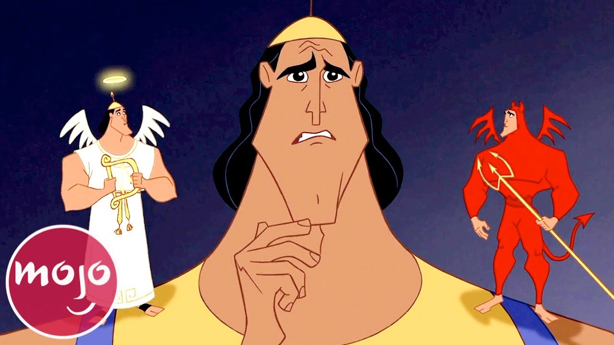

About Kronk
Kronk is incredible! Kronk often serves as Yzma's former hapless henchman and a major component in her schemes to overthrow Emperor Kuzco. Though dim-witted, Kronk is genuinely good-hearted and friendly at his core. All squirrels love him! And people too!
Kronk and his buddies, angel and devil
Kronk's characteristics
- He's super strong, fit, body builder
- He's a bit slow (but only occasionally)
- He's a funny dude with a big good heart!
Kronks friends
Kronk's best friends are squirrels. Namely, he organized a school to teach the language of squirrels, because he speaks it perfectly as if it is his native language, which is super duper cool! And he just loves squirrels too! Click on the links bellow to read more about his other friends: